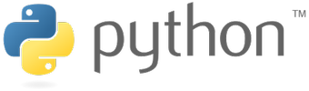
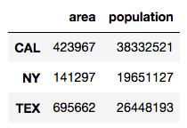
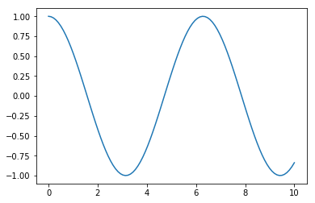
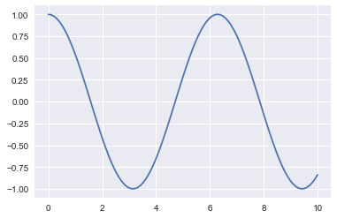

Python et la Data Science
Ecole Nationale Supérieure de Cognitique

Sommaire
- Introduction à la Data Science
- Pourquoi Python ?
- Outils Python pour la Data Science
- Installation simplifiée avec Anaconda
- Partage de code avec Jupyter Notebook
- Calcul mathématique avec NumPy
- Analyse de données avec Pandas
- Création de graphiques avec Matplotlib/Seaborn
Introduction à la Data Science
Qu’est-ce que la Data Science ?
- Objectif général : extraire de la connaissance à partir de données.
- Expression popularisée à partir de 1997 par certains statisticiens.
- 2012 : “Sexiest job of the 21st century” (Harvard Business Review).
- Controverse sur l’intérêt d’employer cette expression.
Les disciplines de la Data Science


Pourquoi Python ?
Le langage Python
Langage de programmation sous licence libre créé en 1989 par Guido van Rossum.

- Multi-paradigmes (procédural, fonctionnel, objet)
- Typage dynamique
- Gestion automatique de la mémoire
La syntaxe de Python
def bonjour(prenom):
print("Bonjour", prenom)
amis = ["Lou", "David", "Iggy"]
for ami in amis:
bonjour(ami)
En pratique
Python, le standard pour la Data Science
- Qualités du langage (logique, simplicité, souplesse)
- Implication de la communauté scientifique et universitaire
- Existence de nombreuses bibliothèques open source dédiées
Outils Python pour la Data Science
Anaconda
Distribution incluant Python et de nombreux outils pour la Data Science

Jupyter Notebook

- Interface pour utiliser IPython dans un navigateur
- Regroupe texte, code (interactif) et images dans un même document (extension .ipynb)
- Standard pour le partage de résultats scientifiques
Google Colaboratory
Environnement cloud d’exécution de notebooks Jupyter, avec possibilité d’utiliser un GPU.


- Librairie Python pour le calcul numérique
- Gère efficacement les tableaux multidimensionnels
import numpy as np
x = np.array([1, 4, 2, 5, 3])
print(x[:2]) # [1 4]
print(x[2:]) # [2 5 3]
print(np.sort(x)) # [1, 2, 3, 4, 5]
NumPy et les tenseurs
Tenseur : ensemble de valeurs (très souvent numériques) stockées dans un tableau multidimensionnel
- Vecteur = tenseur à une dimension
- Matrice = tenseur à deux dimensions
En pratique
- Librairie Python pour l’analyse de données
- Facilite la gestion de données hétérogènes
import pandas as pd
pop = pd.Series({'CAL':38332521, 'TEX':26448193, 'NY':19651127})
area = pd.Series({'CAL':423967, 'TEX':695662, 'NY':141297})
states = pd.DataFrame({'population':pop, 'area':area})

En pratique
Librairie Python pour la création de graphiques 2D
import numpy as np
import matplotlib.pyplot as plt
x = np.linspace(0, 10, 100)
plt.plot(x, np.cos(x))

Seaborn
- Librairie Python de visualisation de données
- Améliore l’apparence des graphiques Matplotlib
import seaborn as sns
sns.set()
